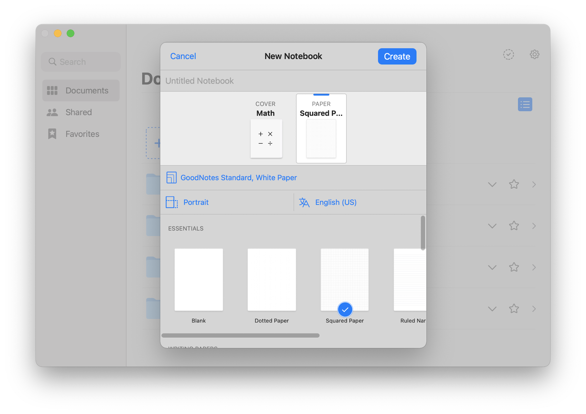
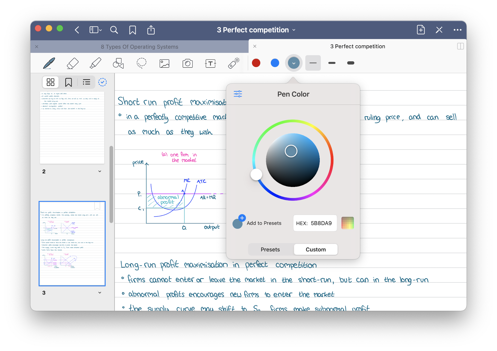

5 March 2021
GoodNotes is an Apple App designed for taking notes with your iPad and Apple Pencil. It has unlocked a new era of note taking by expanding from pen and paper, to digital. I made the switch towards the end of 2020 when I started my A-Levels, because I wanted a better way of taking, storing, and finding my notes.
If I were to write all my notes on paper, I may need them during a lesson when they are at home and I cannot get to them. The iPad allows you to pull up any notes you have taken whenever you like.
Of course I could use a keyboard with the iPad, or a laptop to type up class notes, but handwriting benefits how well you remember the information you write down. You write slower than you type giving your brain more time to think about what you are writing down.
The folder and notebook organisation structure is what set GoodNotes ahead of Notability in my opinion. It is designed in a way that you can have folders inside folders inside folders, whereas Notability limits 'folder depth'.
My folders are structured in a way that follows the specification of my subjects and the contents of the textbooks we use so that the content we learn is always easy to find and in the right place.
GoodNotes has a feature which allows you to search for any folder or notebook, as well as search actual words or phrases you have written in your notebooks. Say you couldn't find the notebook you needed, but remembered the context or words inside it, all you need to do is do a quick search and it will open it up for you.
When creating a notebook, you are given a variety of cover and page options. You can use either white, yellow, or dark pages, with 'essentials' templates such as plain, squared, dotted, or lined, as well as planner templates and music templates. Or you could create and upload your own templates, or even write over an image.
The colour options are unlimited. GoodNotes gives you some standard default colours, which you can change to your own favourites if you want. You can change the pen thickness to almost anything size. There is a choice between fountain pen, ball pen, or brush pen, which all have different sharpness and pressure sensitivity.
The eraser has 3 sizes, with an option to erase the entire stroke or to only remove part of the stroke. Another option allows for only highlighter to be removed.
Like the pen, the highlighter has unlimited colour and thickness options. An option allows for the highlighter stroke to snap into a perfect line over your written notes.
The shape tool will snap whatever you draw into a shape, which can be adjusted a resized where needed. You can also turn on an option which will snap your stroke into a shape if you hold at the end of the stroke. This comes in handy in maths and economics with graph and shape drawing.
The lasso tool is one of the features that convinced me to switch to digital note taking. It gives you the ability to draw around any handwriting or images and then gives the following options: take screenshot, resize, colour, convert, cut, copy, paste.
Taking a screenshot and sharing it is super easy as you just select and send. Resize allows you to make the handwriting larger or smaller. Colour allows you to recolour the selected text. Convert intelligently reads your handwriting and converts it into text which can simply be copied and pasted wherever you need it.
GoodNotes is constantly backing up your files and saving them to iCloud. I save all my notes into Google Drive, which saves both the PDF and GoodNotes version. This means I can quickly view my notes as a PDF or reload them back into GoodNotes if any were to be accidentally deleted.
Aside from the cost of the iPad, the App has been well worth the £7.99, due to the customisability and ease of use. I would highly recommend digital note taking and GoodNotes to anyone who finds paper notes difficult to organise.